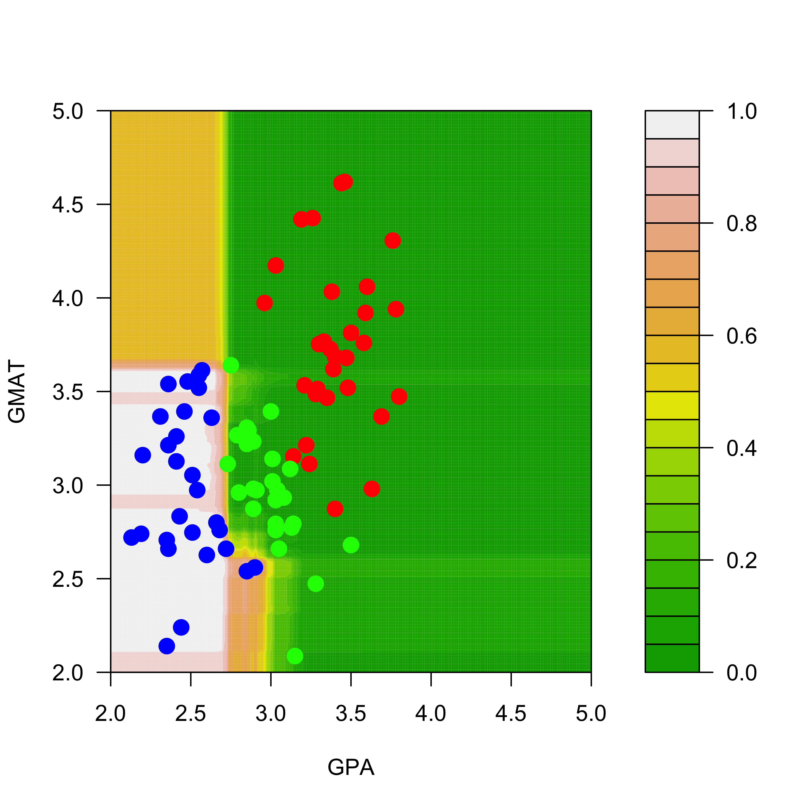
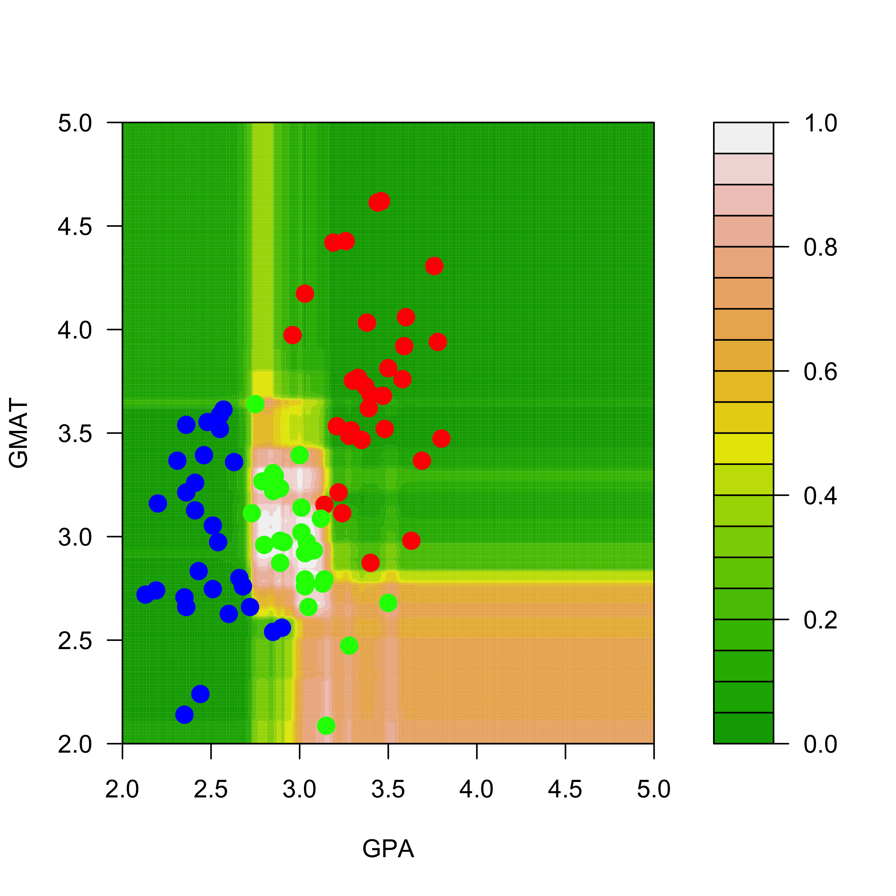
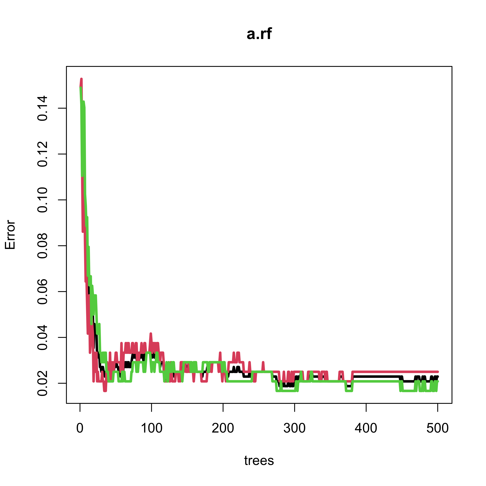
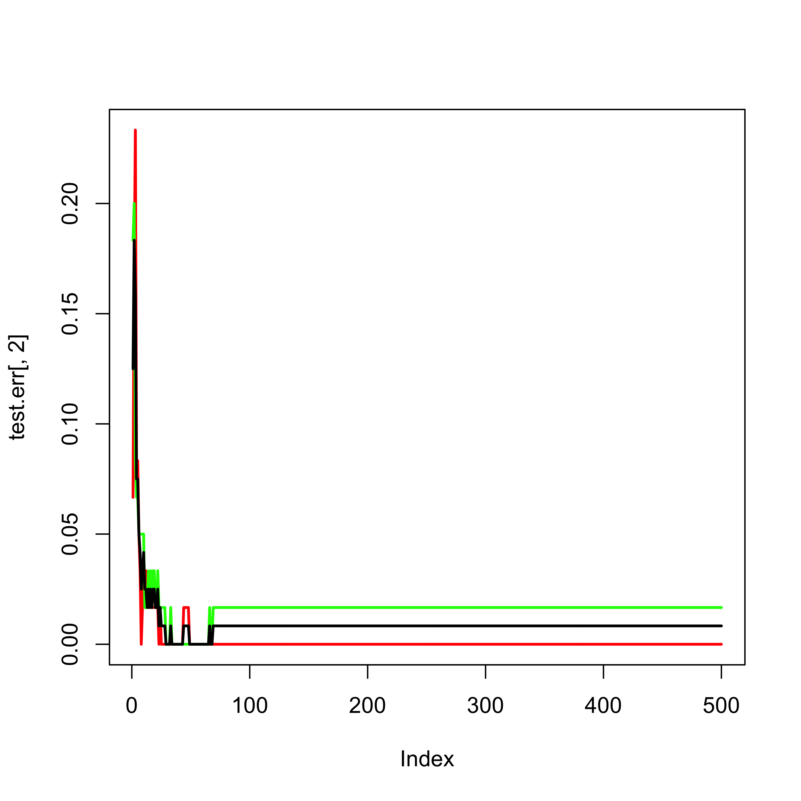
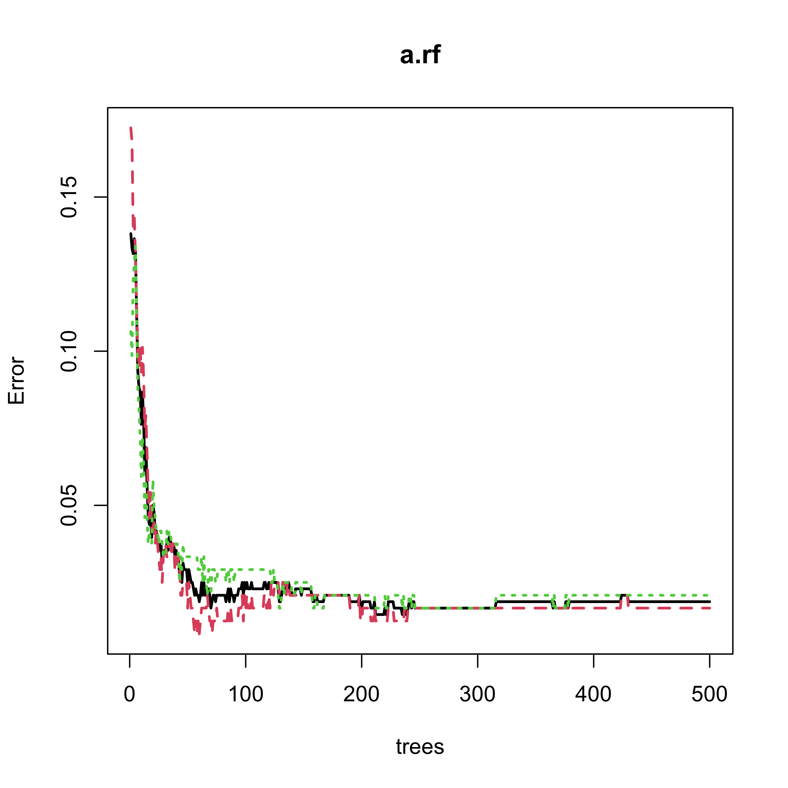

mm <- read.table("data/T11-6.DAT", header = FALSE)
mm$V3 <- as.factor(mm$V3)
mm[, 2] <- mm[, 2] / 15016 Random Forests
Even though using a bagged ensemble of trees usually results in a more stable predictor / classifier, a better ensemble can be improved by training each of its members in a careful way. The main idea is to try to reduce the (conditional) potential correlation among the predictions of the bagged trees, as discussed in class. Each of the bootstrap trees in the ensemble is grown using only a randomly selected set of features when partitioning each node. More specifically, at each node only a random subset of explanatory variables is considered to determine the optimal split. These randomly chosen features are selected independently at each node as the tree is being constructed.
To train a Random Forest in R we use the funtion randomForest from the package with the same name. The syntax is the same as that of rpart, but the tuning parameters for each of the trees in the forest are different from rpart. Refer to the help page if you need to modify them.
We load and prepare the admissions data as before:
and train a Random Forest with 500 trees and using all the default tuning parameters:
library(randomForest)
a.rf <- randomForest(V3 ~ V1 + V2, data = mm, ntree = 500)Predictions can be obtained using the predict method, as usual, when you specify the newdata argument. Refer to the help page of predict.randomForest for details on the different behaviour of predict for Random Forest objects when the argument newdata is either present or missing.
To visualize the predicted classes obtained with a Random Forest on our example data, we compute the corresponding predicted conditional class probabilities on the same grid used before:
aa <- seq(2, 5, length = 200)
bb <- seq(2, 5, length = 200)
dd <- expand.grid(aa, bb)
names(dd) <- names(mm)[1:2]The estimated conditional probabilities for class red are shown in the plot below (how are these estimated conditional probabilities computed exactly?)
pp.rf <- predict(a.rf, newdata = dd, type = "prob")
filled.contour(aa, bb, matrix(pp.rf[, 1], 200, 200),
col = terrain.colors(20),
xlab = "GPA", ylab = "GMAT",
plot.axes = {
axis(1)
axis(2)
},
panel.last = {
points(mm[, -3],
pch = 19, cex = 1.5,
col = c("red", "blue", "green")[mm[, 3]]
)
}
)
And the predicted conditional probabilities for the rest of the classes are:
filled.contour(aa, bb, matrix(pp.rf[, 2], 200, 200),
col = terrain.colors(20),
xlab = "GPA", ylab = "GMAT", plot.axes = {
axis(1)
axis(2)
},
panel.last = {
points(mm[, -3],
pch = 19, cex = 1.5,
col = c("red", "blue", "green")[mm[, 3]]
)
}
)
filled.contour(aa, bb, matrix(pp.rf[, 3], 200, 200),
col = terrain.colors(20), xlab = "GPA",
ylab = "GMAT", plot.axes = {
axis(1)
axis(2)
},
panel.last = {
points(mm[, -3], pch = 19, cex = 1.5, col = c("red", "blue", "green")[mm[, 3]])
}
)
A very interesting exercise would be to train a Random Forest on the perturbed data (in mm2) and verify that the predicted conditional probabilities do not change much, as was the case for the bagged classifier.
16.1 Another example
We will now use a more interesting example. The ISOLET data, available here: http://archive.ics.uci.edu/ml/datasets/ISOLET, contains data on sound recordings of 150 speakers saying each letter of the alphabet (twice). See the original source for more details. Since the full data set is rather large, here we only use the subset corresponding to the observations for the letters C and Z.
We first load the training and test data sets, and force the response variable to be categorical, so that the R implementations of the different predictors we will use below will build classifiers and not their regression counterparts:
xtr <- read.table("data/isolet-train-c-z.data", sep = ",")
xte <- read.table("data/isolet-test-c-z.data", sep = ",")
xtr$V618 <- as.factor(xtr$V618)
xte$V618 <- as.factor(xte$V618)To train a Random Forest we use the function randomForest in the package of the same name. The code underlying this package was originally written by Leo Breiman. We first train a Random Forest, using all the default parameters
library(randomForest)
set.seed(123)
(a.rf <- randomForest(V618 ~ ., data = xtr, ntree = 500))
#>
#> Call:
#> randomForest(formula = V618 ~ ., data = xtr, ntree = 500)
#> Type of random forest: classification
#> Number of trees: 500
#> No. of variables tried at each split: 24
#>
#> OOB estimate of error rate: 2.29%
#> Confusion matrix:
#> 3 26 class.error
#> 3 234 6 0.02500000
#> 26 5 235 0.02083333We now check its performance on the test set:
p.rf <- predict(a.rf, newdata = xte, type = "response")
table(p.rf, xte$V618)
#>
#> p.rf 3 26
#> 3 60 1
#> 26 0 59Note that the Random Forest only makes one mistake out of 120 (approx 0.8%) observations in the test set. However, the OOB error rate estimate is slightly over 2%. The next plot shows the evolution of the OOB error rate estimate as a function of the number of classifiers in the ensemble (trees in the forest). Note that 500 trees appears to be a reasonable forest size, in the sense thate the OOB error rate estimate is stable.
plot(a.rf, lwd = 3, lty = 1)
Consider again the ISOLET data, available here: http://archive.ics.uci.edu/ml/datasets/ISOLET. Here we only use a subset corresponding to the observations for the letters C and Z.
We first load the training and test data sets, and force the response variable to be categorical, so that the R implementations of the different predictors we will use below will build classifiers and not their regression counterparts:
xtr <- read.table("data/isolet-train-c-z.data", sep = ",")
xte <- read.table("data/isolet-test-c-z.data", sep = ",")
xtr$V618 <- as.factor(xtr$V618)
xte$V618 <- as.factor(xte$V618)To train a Random Forest we use the function randomForest in the package of the same name. The code underlying this package was originally written by Leo Breiman. We train a RF leaving all paramaters at their default values, and check its performance on the test set:
library(randomForest)
set.seed(123)
a.rf <- randomForest(V618 ~ ., data = xtr, ntree = 500)
p.rf <- predict(a.rf, newdata = xte, type = "response")
table(p.rf, xte$V618)
#>
#> p.rf 3 26
#> 3 60 1
#> 26 0 59Note that the Random Forest only makes one mistake out of 120 observations in the test set. The OOB error rate estimate is slightly over 2%, and we see that 500 trees is a reasonable forest size:
plot(a.rf, lwd = 3, lty = 1)
a.rf
#>
#> Call:
#> randomForest(formula = V618 ~ ., data = xtr, ntree = 500)
#> Type of random forest: classification
#> Number of trees: 500
#> No. of variables tried at each split: 24
#>
#> OOB estimate of error rate: 2.29%
#> Confusion matrix:
#> 3 26 class.error
#> 3 234 6 0.02500000
#> 26 5 235 0.0208333316.2 Using a test set instead of OBB
Given that in this case we do have a test set, we can use it to monitor the error rate (instead of using the OOB error estimates):
x.train <- model.matrix(V618 ~ ., data = xtr)
y.train <- xtr$V618
x.test <- model.matrix(V618 ~ ., data = xte)
y.test <- xte$V618
set.seed(123)
a.rf <- randomForest(x = x.train, y = y.train, xtest = x.test, ytest = y.test, ntree = 500)
test.err <- a.rf$test$err.rate
ma <- max(c(test.err))
plot(test.err[, 2], lwd = 2, lty = 1, col = "red", type = "l", ylim = c(0, max(c(0, ma))))
lines(test.err[, 3], lwd = 2, lty = 1, col = "green")
lines(test.err[, 1], lwd = 2, lty = 1, col = "black")
According to the help page for the plot method for objects of class randomForest, the following plot should show both error rates (OOB plus those on the test set):
plot(a.rf, lwd = 2)
16.3 Feature sequencing / Variable ranking
To explore which variables were used in the forest, and also, their importance rank as discussed in class, we can use the function varImpPlot:
varImpPlot(a.rf, n.var = 20)
16.4 Comparing RF with other classifiers
We now compare the Random Forest with some of the other classifiers we saw in class, using their classification error rate on the test set as our comparison measure. We first start with K-NN:
library(class)
u1 <- knn(train = xtr[, -618], test = xte[, -618], cl = xtr[, 618], k = 1)
table(u1, xte$V618)
#>
#> u1 3 26
#> 3 57 9
#> 26 3 51
u5 <- knn(train = xtr[, -618], test = xte[, -618], cl = xtr[, 618], k = 5)
table(u5, xte$V618)
#>
#> u5 3 26
#> 3 58 5
#> 26 2 55
u10 <- knn(train = xtr[, -618], test = xte[, -618], cl = xtr[, 618], k = 10)
table(u10, xte$V618)
#>
#> u10 3 26
#> 3 58 6
#> 26 2 54
u20 <- knn(train = xtr[, -618], test = xte[, -618], cl = xtr[, 618], k = 20)
table(u20, xte$V618)
#>
#> u20 3 26
#> 3 58 5
#> 26 2 55
u50 <- knn(train = xtr[, -618], test = xte[, -618], cl = xtr[, 618], k = 50)
table(u50, xte$V618)
#>
#> u50 3 26
#> 3 58 7
#> 26 2 53To use logistic regression we first create a new variable that is 1 for the letter C and 0 for the letter Z, and use it as our response variable.
xtr$V619 <- as.numeric(xtr$V618 == 3)
d.glm <- glm(V619 ~ . - V618, data = xtr, family = binomial)
pr.glm <- as.numeric(predict(d.glm, newdata = xte, type = "response") > 0.5)
table(pr.glm, xte$V618)
#>
#> pr.glm 3 26
#> 0 25 33
#> 1 35 27Question for the reader: why do you think this classifier’s performance is so disappointing?
It is interesting to see how a simple LDA classifier does:
library(MASS)
xtr$V619 <- NULL
d.lda <- lda(V618 ~ ., data = xtr)
pr.lda <- predict(d.lda, newdata = xte)$class
table(pr.lda, xte$V618)
#>
#> pr.lda 3 26
#> 3 58 3
#> 26 2 57Finally, note that a carefully built classification tree performs remarkably well, only using 3 features:
library(rpart)
my.c <- rpart.control(minsplit = 5, cp = 1e-8, xval = 10)
set.seed(987)
a.tree <- rpart(V618 ~ ., data = xtr, method = "class", parms = list(split = "information"), control = my.c)
cp <- a.tree$cptable[which.min(a.tree$cptable[, "xerror"]), "CP"]
a.tp <- prune(a.tree, cp = cp)
p.t <- predict(a.tp, newdata = xte, type = "vector")
table(p.t, xte$V618)
#>
#> p.t 3 26
#> 1 59 0
#> 2 1 60Finally, note that if you train a single classification tree with the default values for the stopping criterion tuning parameters, the tree also uses only 3 features, but its classification error rate on the test set is larger than that of the pruned one:
set.seed(987)
a2.tree <- rpart(V618 ~ ., data = xtr, method = "class", parms = list(split = "information"))
p2.t <- predict(a2.tree, newdata = xte, type = "vector")
table(p2.t, xte$V618)
#>
#> p2.t 3 26
#> 1 57 2
#> 2 3 58